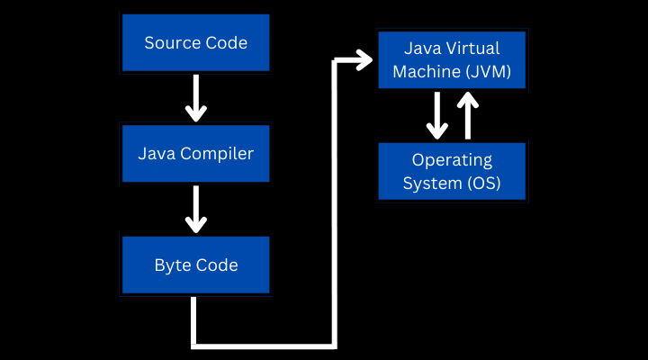

The fundamentals are universal knowledge.
This is the very definition of fundamental.
The fundamentals are the most transferrable and essential concepts learned in a topic.
By knowing the fundamentals you will understand all software, all languages & all frameworks deeper.
Really, what I am talking about here are the Computer Science fundamentals. These explain the existence of programming & machines, including the theory which interrelates them.
At the beginning of learning fundamentals, let's say you learn the first 10% of programming fundamentals. That will be 95% applicable to all languages.
Then after the first 10% of learning fundamentals it lowers to 80%, take a look:
| Learning Percentile | Universal Knowledge |
|---|---|
| First 10% | 95% relevant to all languages |
| First 20% | 80% relevant to all languages |
| First 30% | 60% relevant to all languages |
| First 40% | ... |
| First 50% | ... |
| First 60% | 30% relevant to all languages |
The fundamentals as you learn them deeper, apply less to all languages, but nevertheless they apply.
Transferrable knowledge is by far the best way to learn programming as a beginner.
By focusing on these you will find yourself progressing faster than those who are unaware of the fact.
What Are the Fundamentals?
Here is a list of the lower 40% of fundamentals. These are used in every niche and framework:
| Custom classes | What is an algorithm? | Strings | Generics |
| Compiler theory | Data structures | Primitives | Collections |
| Language syntax | Functions | Dictionary | Data type modifiers |
| File I/O | Variables | Recursion | Pointers |
| Casting | Data types | Control structure | Exception Handling |
| Loops | Math | Inheritance | Abstraction |
| Operators | Arrays | Interfaces | Imports/dependencies |
| Constants | Hardware layout | Polymorphism | Scoping |
Essentials
Review this table. Do you understand all these?
There is more.
But this table captures enough to imagine what I am talking about.
If one day, you are able to read this table and understand all of it, you have progressed in transferrable skills.
Later on, as you advance you will discover there are fundamentals to each niche as well.
There are typical lists of fundamentals which are transferrable for that niche across languages and frameworks.
But these fundamentals I display here are for programming in general.

Photo by Lee Campbell
If, for example you wanted to get into web development you will have to learn the fundamentals first for web development.
For any niche you start learning there will be even another list of fundamentals just like this one.
But what you will find is knowing the fundamentals of that topic carries over to every framework and language that is meant for that niche.
Niche examples include:
- Graphics programming
- Game development
- Machine learning
- Mobile development
- Front-end development
- Back-end development
- Desktop development
- Etc.
By learning the fundamentals of that niche you will have transferrable skills between say Java Spring <-> Node Express.
For me, I am able to switch web development frameworks very quickly because I understand the fundamentals.
But, I do not understand the fundamentals of graphics programming enough to do so. I will have to learn the fundamentals first.

Photo by Our Life in Pixels
After learning a language or framework I should follow a full course on graphics programming for the fundamentals.
Though...
All of these niches are based on general programming fundamentals and when starting that is focus.
How to Learn Programming Fundamentals?
The first way to learn the fundamentals is to follow an introduction to programming course. I typically recommend this one:
Introduction to Programming and Computer Science - Full Course
Though to be fair to you, there are no really in-depth introduction to programming courses that I could find.
Most course instructors follow a programming language and teach the fundamentals along the way.
Besides learning fundamentals directly, learning a language will naturally teach you these essentials.
If you are a beginner, I recommend watching that introduction to programming and afterward focusing on a language.
Though, a lot of self-study is required.
Now, let us get into questions you should be asking as a beginner.
What Am I Supposed to Be Learning About IDEs?
When doing full courses, especially at the beginning, you should use the IDE of the instructor.
Photo by Danial Igdery
As you program you should develop workflows around different IDEs.
I recommend starting with 1 or 2 softwares and really understand the IDEs well.
You should be googling how your software works, stacking knowledge upon knowledge.
It is like being an author and learning Microsoft Word.
As an author, knowledge of Word is hyper important.
You need some way of expressing yourself well.
As you follow a full course usually the instructor will explain the IDE.
Try to get as good as you can with it.
Give yourself time to adjust to it.
Photo by Immo Wegmann
Later on when you are more advanced you can become IDE agnostic.
To where you can program on any IDE.
Yes, your effectiveness & efficiency will vary per IDE.
But, many projects are locked into one software.
Eventually you will have to leave your primary IDE to participate with a group.
But, to start use 1 IDE, max 2.
You will find IDEs also require transferrable knowledge.
Why Are Data Structures Important?
The idea of data structures seems very ambiguous and strange.
However, they are the very core of programming.

Photo by Ian Taylor
All data structures means is to store data.
Store data in a structured way.
This means as a String or a character or an integer.
All those are data structures.
From the lowest level hardware to the highest level web app, data structures are there.
Another word for data structures is just, "memory".
Are you saving your data?
In what structured way are you saving your data?
Why Do We Have to Learn Algorithms?
Algorithms are also a core of programming, really there are two cores.
They are first data structures then algorithms.
It means, how do you manipulate memory?

Photo by Jorge Salvador
First you must store something in memory, either a 1 or a 0.
But how do we manipulate it?
This is an algorithm.
All you are really doing is flipping 0s & 1s around until the monitor light thingy does what you want.
In college, after taking Introduction To Programming 1, 2 & 3 you take an algorithms class.
They will tell you to memorize dozens upon dozens of famous algorithms.

Photo by Andrey Sizov
Often developers think learning algorithms is memorizing ones that exist.
I believe it is better to learn how to create your own algorithms in code.
But, if you start competitive programming then yea, memorizing algorithms is important.
But, as for the essentials, learning to create your own is key.
Does Compiler Theory Really Matter?
Yes. The main reason you need to know how compilers work is so you can use build tools.
Build tools help you use pre-written code AKA dependencies.
All compiler theory is, is knowing how that language processes your code and makes it executable.
If you know how a language is compiled or interpreted build tools becomes much more intuitive.
Take a look at the process for Java:
In Java this is how your source code is compiled down.
The source code is converted to an intermediate language called byte code.
A virtual machine or operating system within an operating system runs the byte code and talks with the host OS.
So along this process, where does pre-written code AKA dependencies get inserted?
It is inserted at the byte code level during compilation.
Let's just pretend we know where the pre-written code is placed.
When you watch a course on a build tool like Maven, hyper important.
You will see how dependencies are inserted with automation.
Without compiler theory Maven will appear very ambiguous.
I have met experienced Java developers who do not know the compiler theory.
They can code great, but don't really understand how things are compiled.
They spent 3-4 days trying to get Maven to build the right libraries.
After much frustration they asked me for help.
Photo by Tim Gouw
This developer has been programming 15 years.
But because I studied compiler theory in Java, then afterward the build tool Maven, I was able to solve his problem in 10 minutes.
By understanding compiler theory Maven can actually be easy to learn with a Udemy course.
I often run into problems like this in every language.
So, whenever you are learning a language and they talk about how things are compiled or interpreted, know it is important.
It will help you.
Every language has different compiler theory
Every language compiles differently.
After learning compiler theory for one language the next becomes easier.

Photo by Gabriel Heinzer
C++ for example is much different than Python & Javascript.
If you learn the compiler theory of C++ it would be much easier to use a build tool like CMake.
Same thing with Javascript & NPM.
All these words I am throwing around are just examples of tools which are really built on top of compiler theory.
Debugging Errors
When it comes to learning programming debugging source code is the primary way to learn.
Debugging by definition means learning how to make source code do what you want.
In my definition this process goes from starting up your computer to the errors in your actual code.
Workflow by Alvaro Reyes
Setting up your IDE, learning how to check for errors, understanding how to run dependencies, it is all debugging.
Often, new developers think debugging is limited to errors in the code itself.
I take a much broader approach and look at the entire programming workflow.
Are you optimized? Do you understand it?
Within the code
Within the code itself there are 4 primary types of debugging errors:
- Syntax errors: Small errors in the actual writing of code.
- Logic errors: Errors in your own logical thinking in code. Every other type of error could be right but the logic behind the code is not intended.
- Compilation errors: There is some error after writing the code and before running it. While the program is turning into machine code it errors.
- Run-time errors: While the program is running, there are errors.
Identifying the type of error is the first thing you must do to solve the problem.
Where along the process is my code messing up?
Photo by Clayton Robbins
This is another place compiler theory becomes important.
If you know how a language is compiled it is easier to place the error.
Do I Need to Know How Hardware Works?
Yes, basic hardware layout is a requirement. You have to know if you are saving your in-code objects on the harddisk, RAM or GPU.
You also should know if you are processing the program on the GPU or the CPU. You can do both.
Photo by Artiom Vallat
At the beginning you will mostly be saving on the harddisk and RAM while processing on the CPU.
However as you get more advanced you may begin using GPU processing, GPU RAM, remote storage or others.
About binary math
If you ever wanted to work on low level programming like C or Assembler, binary math and hardware logic becomes a necessity.
Many developers never touch the stuff.

Photo by Matt Dunlop
The study of how hardware processes binary numbers is called "Computer Architecture" or "Computer Organization".
This study will show you how compilers, machine code and the lowest levels of programming work.
This stuff is really cool and when you talk about it with other developers it makes you look very knowledgeable.
But, if you are doing high level programming, such as Java or Python, it is something you can delay for later.
Anywho, I hope you learned something...
Happy coding!